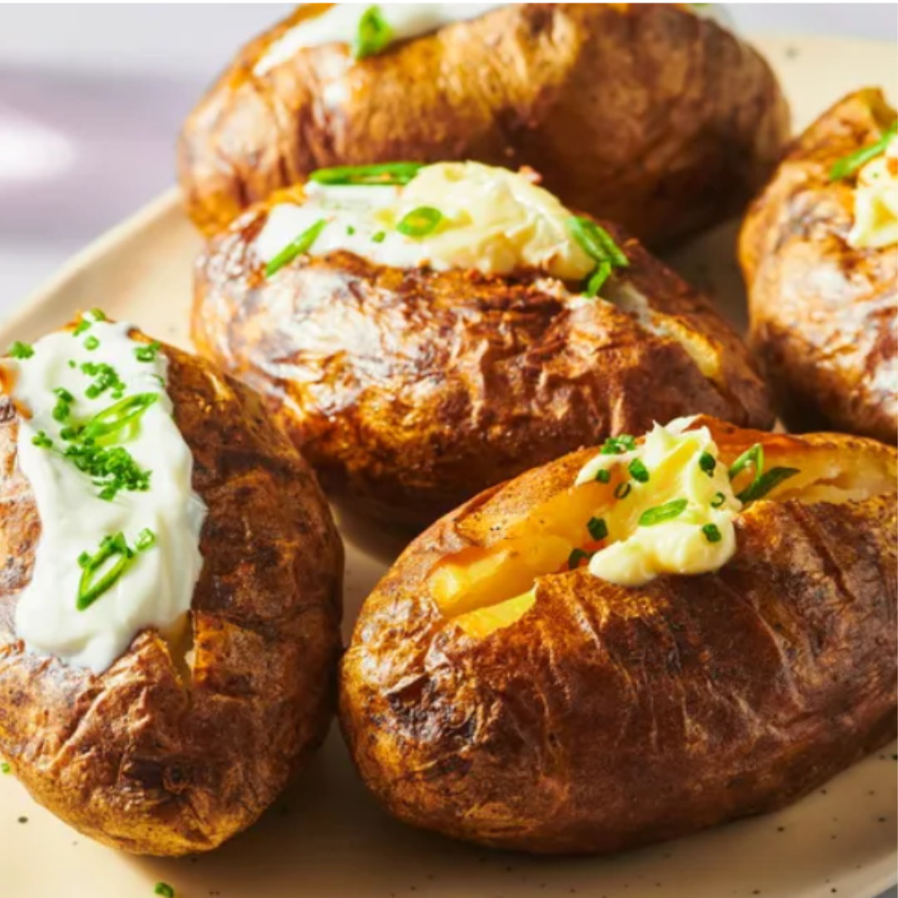

Jacket Potato Recipe

These crispy jacket potatoes are like a baked potato, but better. Serve with butter and sour cream.
Ingredients:
- 6 medium russet potatoes
- 1 tablespoon vegetable oil, or as needed
- ¼ teaspoon sea salt, or to taste
- 1 pinch lemon-pepper seasoning, or to taste
- 12 large squares aluminum foil
Step-by-Step
- Gather ingredients. Preheat the oven to 400 degrees F (200 degrees C).
- Drizzle potatoes with a thin layer of oil. Sprinkle on sea salt and about 1/2 as much lemon-pepper seasoning.
- Wrap each potato in a square of foil, then wrap with a second square. Place foil-wrapped potatoes in a glass or ceramic baking dish.
- Bake in the preheated oven until the skins are crisp and the flesh is soft, 60 to 90 minutes.
- Serve with butter, sour cream, or any of your favorite toppings!